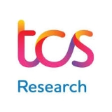

|
Tanuj Sur I'm a PhD student at the School of Computing, National University of Singapore. Previously, I was a Senior Data Scientist at Micron Technology where I focussed on problems at the intersection of the semiconductor industry and AI. Additionally, I am a Computer Vision researcher with publications in A* and A peer reviewed journals and conferences (such as CVPR, ICASSP, etc.). I have been fortunate to work under the guidance of Dr. Subhasis Chaudhury and Dr. Biplab Banerjee at the Indian Institute of Technology Bombay in the field of 3D Vision and Lifelong learning. Additionally, I have served as a research assistant at the Indian Institute of Technology Delhi under the supervision of Dr. Brejesh Lall working on Data-efficient learning and Biomedical Vision problems. I earned my MSc. in Data Science from Chennai Mathematical Institute and my BSc. in Statistics from St. Xavier's College (Autonomous), Kolkata (under the University of Calcutta). |

|
ResearchI'm interested in Computer Vision problems related to 3D reconstruction and scene understanding. My research till now has been primarily in meta learning, incremental learning and data efficient learning. You can find my research works highlighted below. |


|
Hyperbolic Uncertainty-Aware Few-Shot Incremental Point Cloud Segmentation
Tanuj Sur, Samrat Mukherjee, Kaizer Rahman, Dr. Subhasis Chaudhury, Dr. Muhammad Haris Khan, Dr. Biplab Banerjee IEEE/CVF Conference on Computer Vision and Pattern Recognition, 2025 3D point cloud segmentation faces challenges in incremental settings, especially with limited supervision and unseen classes. While Few-Shot Learning (FSL) and Class-Incremental Learning (CIL) have been studied separately, their combination (FSCIL) is underexplored in 3D segmentation. To tackle this, we propose Hyperbolic Ideal Prototytpe Optimization (HIPO) framework which leverages hyperbolic Poincaré Ball classifier space and CLIP-informed Ideal Prototypes in the Poincaré sphere to capture data hierarchy, enforce prototype orthogonality, and maintain wide representational margins. HIPO mitigates forgetting, enables smooth class integration, and achieves state-of-the-art results on S3DIS, ScanNetv2, and cross-dataset benchmarks for FSCIL. |


|
UIDAPLE: Unsupervised Incremental Domain
Adaptation through Adaptive Prompt Learning
Samrat Mukherjee, Tanuj Sur, Saurish Seksaria, Prof. Dr. Gemma Roig, Dr. Subhasis Chaudhury, Dr. Biplab Banerjee International Conference on Acoustics, Speech, and Signal Processing, 2025 Paper link Continual learning in deep neural networks faces challenges like catastrophic forgetting and issues with shifting data distributions. This paper addresses these challenges within the Unsupervised Incremental Domain Adaptation (UIDA) framework, where the initial source domain is labeled while subsequent domains are not. Existing methods often lack cross-domain generalization and adaptation. We propose UIDAPLE, a new approach that uses a unified prompt across all domains, leveraging the CLIP foundation model to eliminate the need for separate domain treatments. |

|
Robust Prototypical Few‑Shot Organ Segmentation with Regularized Neural‑ODEs
Prashant Pandey*, Mustafa Chasmai*, Tanuj Sur, Dr. Brejesh Lall IEEE Transactions on Medical Imaging, 2023 (Impact Factor: 10.6) Paper link | Code The text discusses advancements in deep learning for image semantic segmentation but highlights the challenge of requiring large annotated datasets. It notes a shift towards Few-Shot Learning (FSL), particularly in medical domains where pixel-level annotations are costly. The proposed solution is Regularized Prototypical Neural Ordinary Differential Equation (R-PNODE), which utilizes Neural-ODEs alongside cluster and consistency losses to improve Few-Shot Segmentation (FSS) of organs. |

|
Adversarially Robust Prototypical Few‑shot Segmentation with Neural‑ODEs
Prashant Pandey*, Aleti Vardhan*, Mustafa Chasmai, Tanuj Sur, Dr. Brejesh Lall International Conference on Medical Image Computing and Computer Assisted Intervention, 2022 Paper link | Code Few-shot Learning (FSL) methods are increasingly used in data-scarce environments, particularly in the medical field where obtaining annotations is costly. However, Deep Neural Networks, especially in FSL, are vulnerable to adversarial attacks, which can critically affect clinical decisions. This paper presents a framework aimed at enhancing the adversarial robustness of few-shot segmentation models in the medical domain. |

|
Mathematical Expressions in Software Engineering Artifacts
Tanuj Sur, Aaditree Jaisswal, Dr. Venkatesh Vinayakarao CODS-COMAD: International Conference on Data Science and Management of Data, 2023 Paper link Mathematical expressions are essential not only for numerical calculations but also for enhancing clarity in discussions and documentation. They are present in various software engineering artifacts like source code, documentation, and bug reports. Research shows that these expressions impact the accuracy of commit message generation tools. To support future research, a dataset of bug reports with annotated mathematical expressions has been created and shared, along with a tool called MEDSEA to identify these expressions. |
ProjectsI have highlighted some of the projects that I have been a part of. |
|
Egocentric Driver Attention
Tanuj Sur, Dr. Shankar Gangisetty, Dr. C.V. Jawahar. We curate a dataset comprising of egocentric driver attention maps in simulated evironments built upon CARLA and Unreal Engine. We use Meta's Eye Tracking ARIA glasses for registering user gaze. |

Research Internships |
| Centre for Visual Information Technology (CVIT), International Institute of Information Technology - Hyderabad under Dr. C.V. Jawahar. | |
| Center of Machine Intelligence & Data Science (CMInDS), Indian Institute of Technology Bombay under Dr. Subhasis Chaudhury and Dr. Biplab Banerjee. | |
|  | TCS Research and Innovation Labs |
Services |
| Emergency Reviewer, WACV 2025. | |
|
1. Industry Project instructor on "Web User Interface (UI) detection from website images".
2. Teaching Assistant for Data Mining & Machine Learning under Dr. Madhavan Mukund. |
|
|